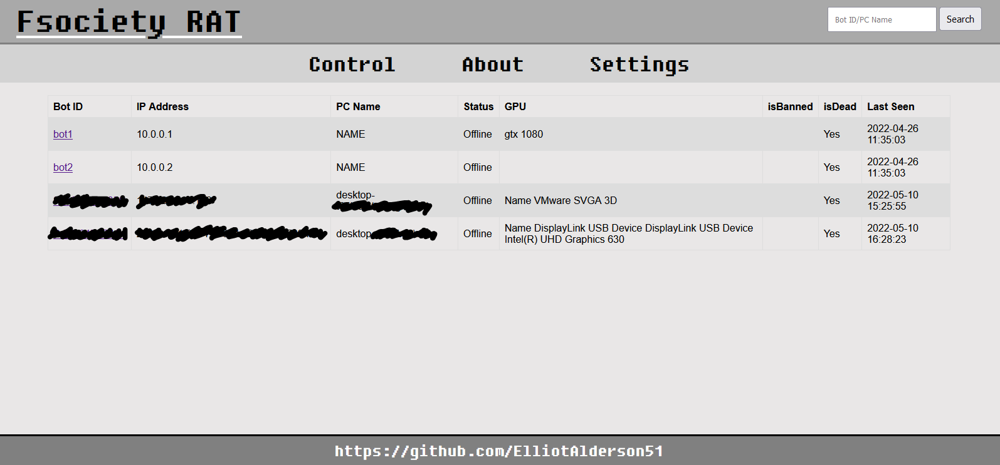

It was really fun to make this project! This project have a lot of great features and a very good website control for the bots.
The final Malware will bypassing UAC, installing rootkit on 32 bit systems, obfuscated strings, Anti-VM technique, Process Hollowing , Communicate with the website control using CURL (curl is preinstalled in every windows!).
The malware communicate with a control website, this is the current attacks:
✔️ ScreenshotMain website control - list the clients and show info about them
Victim profile page - Contain the attacks options

The Rootkit is for 32-bit systems. Click to see the Rootkit project on GitHub
Create a DLL that will be hijacked to ComputerDefaults to start the malware with high privilege.
Click to see the BypassUAC project on GitHub
This Projects will inject a file to new section in another file.
Injector.exe "section name" "target" "file"
This is the Control Website the malware is communicate with to get the commands to execute.
This website have hardcoded url in the malware code, the malware will get the Control Website url from this website.
I create this website so if there is a problem with the Control Website you can just upload the Control Website again and change the url in this website.
This solutions was helping me to build the final malware
This automated the build of the final malware.
✔️ UPX the DLL fileThis helps me to obfuscate the strings in the malware.
* Obfuscate Imports
This project is for EDUCATIONAL PURPOSES ONLY. You are the only responsable for your actions! Happy Hacking (;